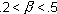
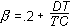
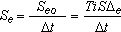

DeltaV Fuzzy
DeltaV Fuzzy uses the Fuzzy Logic Control (FLC) function block to provide an advanced alternative to standard PID control. The FLC function block provides the control capability of the PID block with the added benefit of superior response for both setpoint changes and external load disturbances. By using fuzzy logic, the FLC function block minimizes overshoot and provides good load disturbance rejection. The scaling factors of the FLC function block can be automatically established using Tune with InSight.
The FLC function block operates by using predefined fuzzy rules, membership functions, and adjustable parameters known as scaling factors. The FLC function block translates the loop's absolute values into fuzzy values by calculating the scaled error (e) and scaled change in error (Δe) in addition to the degree of membership in each of the predefined membership functions. It then applies the fuzzy rules and, finally, retranslates the values into a control move.
This function block supports mode control, signal scaling and limiting, feedforward control, override tracking, alarm limit detection, and signal status propagation.
Fuzzy Logic Principles
The nonlinearity built into the FLC function block reduces overshoot and settling time, achieving tighter control of the process loop. Specifically, the FLC function block treats small control errors differently from large control errors and penalizes large overshoots more severely. It also severely penalizes large changes in the error, helping to reduce oscillation.
Two Membership Functions
The Fuzzy Logic Control function block uses two membership functions: the input signals are error and change in error, and the output signal is the change in control action. The relations among these three variables represent a nonlinear controller. The nonlinearity results from a translation of process variables to a fuzzy set (fuzzification), rule inference, and retranslation of a fuzzy set to a continuous signal (defuzzification).
The two membership functions for error, change in error and change in output are negative and positive. The membership scaling (Se and SΔe) and the error value and change in error, respectively, determine the degree of membership.
The change in output membership functions are called singletons. They represent fuzzy sets whose support is a single point with a membership function of one. The membership scaling (SΔu) determines the magnitude of output change for a given error and change in error.
Four Fuzzy Logic Rules
There are four fuzzy logic rules that the FLC function block uses for a reverse acting controller.
| Number | Rule |
|
Rule 1 |
If error is N and change in error is N, make change in output POSITIVE. |
|
Rule 2 |
If error is N and change in error is P, make change in output ZERO. |
|
Rule 3 |
If error is P and change in error is N, make change in output ZERO. |
|
Rule 4 |
If error is P and change in error is P, make change in output NEGATIVE. |
Fuzzy Logic Control Nonlinear PI Relationship
The two membership functions associated with each input variable and three membership functions for the output variable make the FLC function block nonlinear in its response.
For regions where the absolute error is greater than the error scaling factor or the absolute change in error is greater than the change in error scaling factor, the values for error and change in error are clipped at the error scaling factor and change in error scaling factor, respectively. The following figure shows an example FLC curve that illustrates how the change in controller gain is smooth and continuous using only two input membership functions and three output membership functions.
The dark line shows the FLC function block's nonlinear relationship when the error is equal to the change in error. The straight line through the origin shows the linear relationship of a conventional PI controller. As the error and change in error increase, the change in output of a conventional PI controller increases linearly. Note that the gain of the FLC function block is similar to the gain of the PI controller when the error and change in error are small. The gain of the FLC function block increases gradually as the error and change in error increase.
The nonlinearity built into the FLC function block reduces overshoot and settling time, achieving tighter control of the process loop. To help anticipate a rapid change in the process with the FLC function block, derivative action is provided in the feedback path of the loop as shown in the following figure.
The FLC function block treats small control errors differently from large control errors and penalizes large overshoots more severely. It also severely penalizes large changes in the error, helping to reduce the oscillation.
The above figure depicts how an FLC function block reacts to overshoot and oscillation. At points B, D, and F, where overshoot occurs, the FLC function block applies stronger control actions to bring the variable back to the setpoint. At points A, C, and E, where large changes in error occur and are dominant, the FLC function block applies stronger corrective actions to reduce oscillation.
This type of nonlinearity allows the FLC function block to provide better control performance than standard PID control.
Establishing Scaling Factors
InSight can be used to establish the scaling factors (Se, SΔe, and SΔu). For a small control error and setpoint change less than a nominal value (ΔYsp), the FLC function block scaling factors are related to the proportional gain (Kp) and reset (Ti), which would be used in a PI block executing at a one (1) second scan rate (Δt) to control the same process. Refer to the following equations:
where:
SΔe = change of error scaling
Se = error scaling
SΔu = change of controller output scaling
Se0 = error scaling for a one (1) second scan rate
Beta is a function of process deadtime (DT) and ultimate period or time constant (TC) and has values in the following range:

The approximate formula for calculating beta is as follows:

The Fuzzy Logic Control function block accounts for the scan rate and recalculates the error scaling factor (Se), which depends on the scan rate appropriate to the function block scan (Dt).

The Fuzzy Logic Control function block is designed to be set up by InSight. However, if you set up scaling factors manually, the FLC block will set up derivative time automatically, and you will not have manual access to the derivative term.